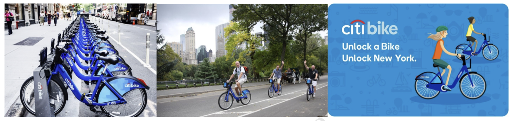
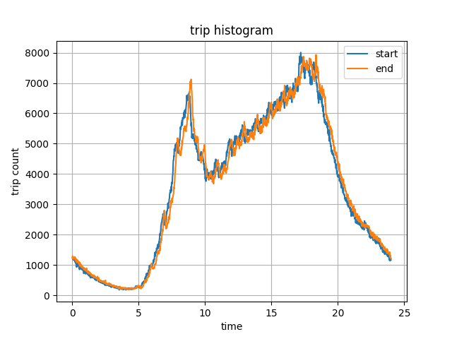

New York CitiBike Trip Histories
Nine years of bike-share trips in New York City, cleaned, processed in a distributed pipeline and turned into answers for operators: when people ride, where, for how long, and where the network should grow next.
- Data analytics & visualisation
- Graduate course project
- York University · 2022
- Python · pandas · web demos
- with Amin Fadaeinejad and Pouya (Adrian) Firouzmakan

Riders vs. the trips nobody logged
A bike that ends one trip at station A and starts its next at station B must have been moved by the operator in between. We called these reconstructed movements magic trips. They reveal how CitiBike rebalances its fleet, something the public data never states directly.
Compare the two
Interactive
What we found
- A commuter systemTrips peak at 8–9 am and 5–6 pm on the time-of-day curve: CitiBike is used to get around traffic, not just for leisure.
- Seasonal and growingTrips rise in warm months and fall in winter, while active bikes and stations grew throughout, fastest in 2020.
- Short ridesRider durations peak around six minutes with a long tail; most trips end well inside the 30-minute standard ride.
- Rebalancing by dayMagic-trip gaps peak under 5 hours and recur at 24-hour intervals: daily operations. Very long gaps likely mean maintenance.
- A Central Park loopThe single most common trip starts and ends at the same station beside Central Park: riders out for a loop, not a commute.
For operators. We compared where trips concentrate with where stations are dense, and proposed expanding where demand outruns the station network. Short typical rides also suggest room for more flexible ride plans and pricing than a single 30-minute standard.